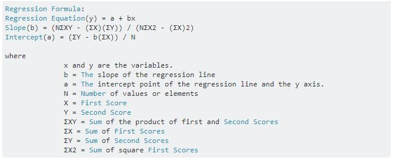
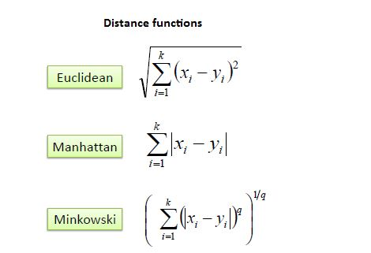
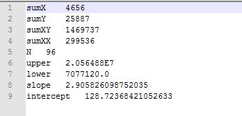
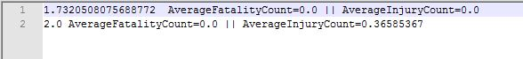

Cloud Computing - Crash Data Analysis and Prediction. Crashes are nothing new. As the amount of vehicles increase, crashes tend to increase. Many times it happens that, correct information about the crash cannot be obtained or predicted quickly enough to send in support or roadside help. Using this analysis, we aim to help predict what kind of crash it would be on multiple factors. Doing this will help to provide better and faster medical help as well as other roadside help. If we can forecast that if it is a cretain type of crash, we will need paramedics, a chopper, firefighter and possibly a crane to clear the craahs area, we can deploy them at correct time ans quickly, saving lives and also be able to save money. Using this analysis we can say at what period we would require more resources. This all would reduce burden on healthcare facilities. Allso we will be able o identify what causes a crash and try to prevent those factors.
The motivation to do this was something we thought is wierd. The dataset we have used is of a small town of Cary in North Carolina NC. What was interesting as well as wierd was, though being a small town it recorded an unsual amount of crashes. We wanted to predict what kind of situations led to more crashes. We also wanted to see, if there is any particular time of the day, where we see a unexpected spike of crashes. All this analysis could lead to some useful insights as to how to reduce these crashes and as an obvious result of that, save lives of people. Another interesting thought process is that, after a crash, only the quick response team reaches and then paramedics, firefighters are deployed. Sometimes as correct medical help is not available quickly, the person in crash who could have been saved, looses his life, and sometimes excessive facilities are deployed. Using the analysis, we can deploy correct help by predicting the severeness of crash and save money as well as lives.
JAVA Implementation
Linear regression is one of the most fundamental concepts in prediction and analysis. We analysed the number of crashes by making time slots. Using this we can predict, number of crashes per interval This kind of data will help in utilizing resources in more efficient manner. It can be varied like, roaad patrol should be more at that interval, more medic facilities etc.
We used linear regression to find the slope and intercept. Based on these values we can find easliy how many crashes are likely to be expected in the time frame.
JAVA Implementation
The classification helps us understand how severe the accident can be and make arrangements accordingly. Feeding the system a possible paramenters, we can classify and tell what kind of accident or a crash to expect and how many fatalities, injuries may happen. We have used eight parameters to finely classify the accidents through all the records.
This helps in more accuraate prediction and increases the hit rate.
We implemented the linear regression algorithm with a different apporaach. As the number of records was high, we decided to make a group for the time interval. We made a interval of 15 minutes. Now by grouping we have 96 groups for the 24 hrs. This helps us in identifying number of accidents per 15 min. Using this data, we plot a linear regression plot. Using the following formula, we calculated the slope and intercept. So now when i want to find how many accidents are possible at a given time interval, using the previous data we will get a best fit.

We also implemented KNN Algorithm. Now this algorithm makes its prediction based on its class. It identifies which is his closest neighbour and then predicts the value using the neighbor. It is something like, if the distance is the least, the given values would tend to behave similarly to the closest value. Hence we can find 1- closest neighbour or 2 closest neighbor to get the predicted value.

Now we have decided to use the Euclidean distance formula. With this formula we calulate the distances and try to find the best possible prediction.
The linear regression gives us a best fit for any given data.
Using the slope and the intercept, we can find the required value for the other variable. Hence one independent variable can be used to predict the other.
The sample output will look something like this.

Using K = 2 , We calculate the closest two neighbors to check how close the values can be. Using K = 2 gives us some perspective and help predict more general but more realisitic and chances of prediction being correct increase. 